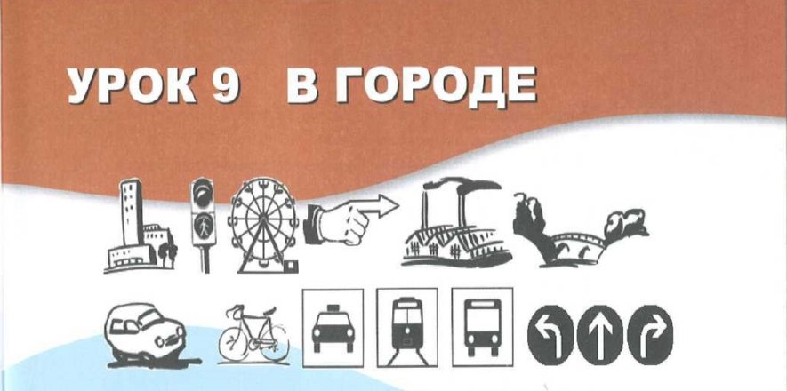

русского языка · Часть 2俄语视听说基础教程2
Авторский ЭОР для подготовки студентов 2 курса нелингвистических специальностей ЦПУ к экзамену по аудиовизуальному курсу русского языка как иностранного.
Задание 1.
Послушайте предложения. Вы слышите то, что написано? Если да, то ставьте значок (√), если нет, то исправьте ошибки в предложениях.
Материалы для подготовки: задания 1, 3, 5 из уроков 9–12 учебника; типовые экзаменационные задания.
Уроки 9–12
Выберите тему


Задание 2.
Послушайте сообщение. Выберите из трёх вариантов предложение, которое наиболее точно передаёт его смысл.
Материалы для подготовки: слова, словосочетания и предложения из уроков 9–12 учебника; типовые экзаменационные задания.
Уроки 9–12
Задание 2 · Выберите тему
Урок 9 · Задание 2
В городе
4 коротких задания · 5 тренировок
Упражнения из учебника
- 9.4с. 2
- 9.5с. 3
- 9.6с. 3
- 9.7с. 3
- 9.11с. 10
Урок 10 · Задание 2
У врача
4 коротких задания · 5 тренировок
Упражнения из учебника
- 10.3с. 18
- 10.6с. 19
- 10.8с. 21
- 10.9с. 25
- 10.10с. 25
Урок 11 · Задание 2
В магазине
4 коротких задания · 5 тренировок
Упражнения из учебника
- 9.1с. 1
- 9.7с. 3
- 11.3с. 33
- 11.4с. 34
- 11.5с. 34
Урок 12 · Задание 2
Внешность и характер
4 коротких задания · 5 тренировок
Упражнения из учебника
- 12.2с. 49
- 12.3с. 50
- 12.4с. 50
- 12.5с. 51
- 12.6с. 51
- 12.7с. 52–53
Задание 3.
Послушайте текст. Прочитайте вопросы, выберите правильный вариант ответа (А, Б или В). Прослушайте текст ещё раз, проверьте свои ответы.
Материалы для подготовки: упражнения 10, 11, 12 из уроков 9–12 учебника; типовые экзаменационные задания.
Уроки 9–12
Задание 3 · Выберите тему
Урок 9 · Задание 3
В городе
Упражнения из учебника
- 9.10с. 9–10
- 9.11с. 10–11
- 9.12с. 12–13
10 вопросов · 20 баллов · 2 прослушивания
Начать подготовкуУрок 10 · Задание 3
У врача
Упражнения из учебника
- 10.10с. 25–26
- 10.11с. 26–27
- 10.12с. 28
10 вопросов · 20 баллов · 2 прослушивания
Начать подготовкуУрок 11 · Задание 3
В магазине
Упражнения из учебника
- 11.10с. 41
- 11.11с. 42–44
- 11.12с. 44–45
10 вопросов · 20 баллов · 2 прослушивания
Начать подготовкуУрок 12 · Задание 3
Внешность и характер
Упражнения из учебника
- 12.10с. 58–59
- 12.11с. 59–60
- 12.12с. 62–63
10 вопросов · 20 баллов · 2 прослушивания
Начать подготовкуЗадание 4.
Послушайте диалоги. Вставьте пропущенные слова из списка. Прослушайте диалоги ещё раз и проверьте свои ответы.
Материалы для подготовки: упражнения 7, 8, 9 из уроков 9–12 учебника. Диалоги для подготовки к экзамену.
Уроки 9–12
Задание 4 · Выберите тему
Урок 9 · Задание 4
В городе
Упражнения из учебника
- 9.7Б, Гс. 3, 4
- 9.8Б, Гс. 5, 6
- 9.9Б, Гс. 7, 8
3 диалога · 20 слов · 20 баллов
Начать подготовкуУрок 10 · Задание 4
У врача
Упражнения из учебника
- 10.7Б, Гс. 20, 20
- 10.8Б, Гс. 21, 22
- 10.9Б, Гс. 24, 24–25
3 диалога · 20 слов · 20 баллов
Начать подготовкуУрок 11 · Задание 4
В магазине
Упражнения из учебника
- 11.7Б, Гс. 35, 35–36
- 11.8Б, Гс. 37, 37–38
- 11.9Б, Гс. 39, 39–40
3 диалога · 20 слов · 20 баллов
Начать подготовкуУрок 12 · Задание 4
Внешность и характер
Упражнения из учебника
- 12.7Б, Гс. 52, 52–53
- 12.8Б, Гс. 54, 54–55
- 12.9Б, Гс. 56, 56–57
3 диалога · 20 слов · 20 баллов
Начать подготовкуЗадание 5
Послушайте текст. Прочитайте вопросы. Прослушайте текст ещё раз, ответьте на вопросы.
Материалы для подготовки: 9.10, 10.10, 11.10, 12.7 учебника. Короткие ответы по прослушанному тексту.
Уроки 9–12
Задание 5 · Выберите тему
Урок 12 · Задание 5
Внешность и характер
Учебник: 12.7 (А–Е), с. 51–53
5 вопросов · 10 баллов
Начать подготовкуЗадание 6.
Прочитайте слова и словосочетания. Подберите к каждому объяснение. Напишите его номер.
Материалы для подготовки: упражнения 7А, 8А и 9А из уроков 9–12 учебника. Слова и объяснения для подготовки к экзамену.
Уроки 9–12
Выберите урок · 选择课文
Урок 9 · Задание 6
В городе
在城市里
Учебник: 9.7А · с. 3; 9.8А · с. 5; 9.9А · с. 7
20 пар · 20 баллов
Открыть урок · 进入课文Урок 10 · Задание 6
У врача
看医生
Учебник: 10.7А · с. 19; 10.8А · с. 21; 10.9А · с. 23
20 пар · 20 баллов
Открыть урок · 进入课文Урок 11 · Задание 6
В магазине
在商店
Учебник: 11.7А · с. 34–35; 11.8А · с. 36–37; 11.9А · с. 39
20 пар · 20 баллов
Открыть урок · 进入课文Урок 12 · Задание 6
Внешность и характер
外貌与性格
Учебник: 12.7А · с. 51–52; 12.8А · с. 54; 12.9А · с. 56
20 пар · 20 баллов
Открыть урок · 进入课文